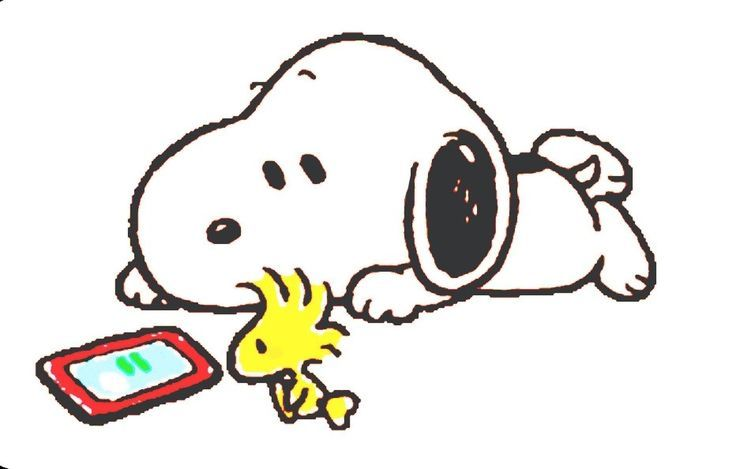

01
4,5 horas por dia
Muitos adolescentes passam mais de quatro horas por dia utilizando redes sociais.
Saiba maisAlice • Ana C. • Geovanna • Maria F. • Yasmim V.
Muitos adolescentes passam mais de quatro horas por dia utilizando redes sociais.
Saiba maisO uso excessivo das redes sociais pode contribuir para sintomas de ansiedade.
Saiba maisComparações constantes com vidas idealizadas podem afetar a autoestima.
Saiba maisReduzir o tempo de tela pode melhorar o sono, a concentração e a saúde mental.
Saiba mais"Não é a tecnologia que define nosso bem-estar, mas a forma como a utilizamos."
— Associação Americana de Psicologia (APA)
